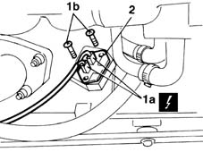

1088E20 resistor for radiator cooling fan - r + r
- Path
- Procedures > 10 ENGINE UNIT > 1088 ENGINE COOLING > 1088E coolant temperature control devices > 1088E20 resistor for radiator cooling fan - r + r
- Kind
- repair procedure (removal / refitting; the operation number is the code)
- Applies to
- engines: 1.9 JTD 8V; all production periods
- Interactive page
- https://sloeber94.github.io/elrnDB-fMltpl/en/#/2891448
Applies to: engines: 1.9 JTD 8V; all production periods
 Removing
Removing
 Refitting
RefittingDisconnect the battery negative (-) terminal.
1. Disconnect electrical connections (1a) and unscrew bolts (1b) securing the resistor to the fan.
2. Remove the resistor from its seat on the fan.
 | Name | Connector |
|---|---|---|
1a | Engine fan adjustment resistor |

Applies to: engines: 1.9 JTD 8V; all production periods
Refitting
RemovingTighten the fan resistor bolts.
Connect the electrical connections.
Connect the negative (-) battery terminal.